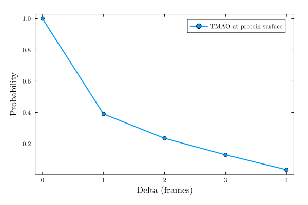
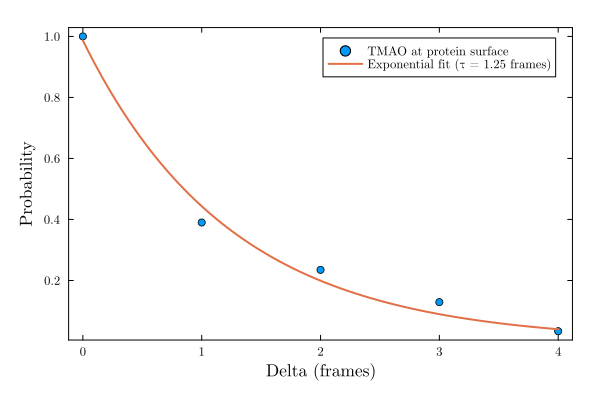

Site occupancy
The occupancy function computes, for each frame of a simulation, which solvent molecules are found within a given cutoff distance of a binding site, defined by a set of atoms (for example, the atoms lining a cavity, or the surface of a protein).
The distance considered is the minimum distance between the site atoms and the atoms of each solvent molecule, computed with the same minimum_distances! machinery used by coordination_number.
The function returns an Occupancy object, wrapping, for each frame, the list of solvent molecules found at the site. This object can then be used to compute simple summary statistics (with mean) or to characterize how long, on average, individual solvent molecules remain at the site (with intermittent_correlation).
Example: TMAO occupancy at a protein binding site
Here we use the MolSimToolkit.Testing test data, a short NAMD trajectory of a protein solvated by water and TMAO, and compute the occupancy of the protein surface by TMAO molecules, using a 3 Å cutoff:
using MolSimToolkit, PDBTools, MolSimToolkit.Testing, Plots
sim = Simulation(Testing.namd2_pdb, Testing.namd2_traj)
protein = select(get_atoms(sim), "protein")
tmao = select(get_atoms(sim), "resname TMAO")
occ = occupancy(
sim, protein, tmao;
solvent_natomspermol=14, cutoff=3.0,
show_progress=false,
)-------------------------------------------------------------------
Occupancy data:
-------------------------------------------------------------------
Total number of solvent molecules: 181
Mean occupancy: 5.3
Minimum occupancy: 2
Maximum occupancy: 10
-------------------------------------------------------------------The list field of the Occupancy object contains, for each frame, the indices of the TMAO molecules (1-based, relative to the tmao selection) found within the cutoff distance of the protein:
occ.list20-element Vector{Vector{Int64}}:
[16, 59, 63, 79, 81, 144, 177]
[16, 175, 176]
[16, 53, 106, 131]
⋮
[104, 179]
[70, 77, 97, 125, 128, 168]and n_solvent_molecules is the total number of TMAO molecules considered:
occ.n_solvent_molecules181Average occupancy
The average number of TMAO molecules found at the protein surface, per frame, is obtained with mean:
mean(occ)5.3Intermittent correlation of the occupancy
The intermittent_correlation function, applied to an Occupancy object, estimates the probability that a TMAO molecule found at the site at some frame is still found there delta frames later. This probability decays as molecules exchange between the site and the bulk solvent, and can be used to characterize the residence time of the solvent at the site:
c = intermittent_correlation(occ; maxdelta=4, show_progress=false)5-element OffsetArray(::Vector{Float64}, 0:4) with eltype Float64 with indices 0:4:
1.0
0.39
0.23469387755102042
0.12903225806451613
0.033707865168539325plot(MolSimStyle,
0:4, parent(c), # parent(c) is required for c is an OffsetArray.
xlabel="Delta (frames)", ylabel="Probability",
linewidth=2, marker=:circle,
label="TMAO at protein surface",
)
Characteristic residence time
In this case, the decay of the intermittent correlation function can be fit to a single exponential, $c(\delta) = a\exp(-\delta/\tau)$, using EasyFit.fitexp (already a dependency of MolSimToolkit.jl), to extract a characteristic residence time $\tau$, in units of frames:
using EasyFit
fit = fitexp(collect(0:4), parent(c); c=0.0, u=upper(a=1.1), l=lower(a=0.9))
tau = fit.b1.2504308997371447The constant term is set to zero (correlation at long times) and the initial value is constrained to be in [0.9,1.1] because it is expected to be 1.0.
plot(MolSimStyle,
0:4, parent(c),
seriestype=:scatter,
xlabel="Delta (frames)", ylabel="Probability",
marker=:circle,
label="TMAO at protein surface",
)
plot!(fit.x, fit.y, linewidth=2, label="Exponential fit (τ = $(round(tau, digits=2)) frames)")
Here the trajectory is very short (20 frames), so this characteristic time is shown only for illustration: with longer, production-quality trajectories, $\tau$ provides a quantitative estimate of how long a solvent molecule typically remains bound to the site.
Reference functions
MolSimToolkit.Occupancy — Type
OccupancyStructure that wraps the result of the occupancy function.
Fields
list::Vector{Vector{Int}}: for each frame of the simulation, the list of the indices (relative to the solvent molecules, that is,1is the first solvent molecule,2the second, etc.) of the solvent molecules found within the cutoff distance of the binding site.n_solvent_molecules::Int: the total number of solvent molecules considered.
MolSimToolkit.occupancy — Method
occupancy(
sim::Simulation,
site::AbstractVector{<:PDBTools.Atom},
solvent::AbstractVector{<:PDBTools.Atom};
solvent_natomspermol::Integer,
cutoff::Real,
show_progress::Bool = true,
)Computes, for each frame of the simulation, which solvent molecules are found within cutoff of the binding site.
The distance considered is the minimum distance between the site atoms and the atoms of each solvent molecule.
Positional Arguments
sim::Simulation: Simulation object.site::AbstractVector{<:PDBTools.Atom}: Vector of atoms defining the binding site.solvent::AbstractVector{<:PDBTools.Atom}: Vector of solvent atoms.
Keyword Arguments
solvent_natomspermol::Integer: Number of atoms per solvent molecule.cutoff::Real: Cutoff distance.show_progress::Bool: Show progress bar. (optional, default:true)
Returns
Occupancy: an object wrapping, for each frame, the list of solvent molecules found withincutoffof the site.
Example
julia> using MolSimToolkit, PDBTools, MolSimToolkit.Testing
julia> sim = Simulation(Testing.namd2_pdb, Testing.namd2_traj; frames=1:5);
julia> protein = select(get_atoms(sim), "protein");
julia> tmao = select(get_atoms(sim), "resname TMAO");
julia> occ = occupancy(sim, protein, tmao; solvent_natomspermol=14, cutoff=3.0, show_progress=false);
julia> length.(occ.list)
5-element Vector{Int64}:
7
3
4
5
6
Statistics.mean — Method
mean(occupancy::Occupancy)Returns the average number of solvent molecules found at the binding site per frame.
Example
julia> using MolSimToolkit, PDBTools, MolSimToolkit.Testing
julia> sim = Simulation(Testing.namd2_pdb, Testing.namd2_traj; frames=1:5);
julia> protein = select(get_atoms(sim), "protein");
julia> tmao = select(get_atoms(sim), "resname TMAO");
julia> occ = occupancy(sim, protein, tmao; solvent_natomspermol=14, cutoff=3.0, show_progress=false);
julia> mean(occ)
5.0